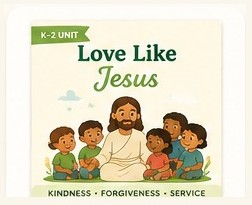
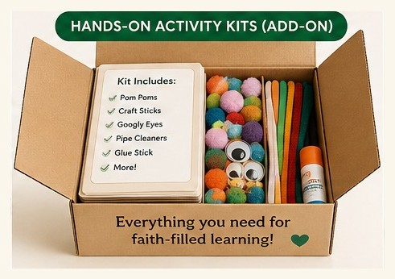

Kindness, forgiveness, and empathy — help your child learn to love others the way Jesus loves us.
📖 See how a First Fruits lesson works →
The early years are when children learn how to treat others. Love Like Jesus turns everyday moments — sharing, apologizing, including someone — into teachable ones, building empathy and communication skills on the example of Jesus himself.
Designed with an early childhood specialist. Built around how young children actually learn — by Anne Livingston, Co-Founder & Early Childhood Specialist.
Open-and-go lessons with exactly what to say.
Bible stories about love, with questions that spark real talk.
Practice kindness, sharing, and apologizing in safe rehearsal.
Workbook pages connecting character to Galatians 5.
Everyday challenges that put love into action.
Celebrate growth in character and skills.
Formats: instant digital download (print at home) or teach right from a screen. Add the Activity Kit and we ship the specialty supplies. Differentiated for K, 1st, and 2nd grade.
Objectives are mapped to common early-learning benchmarks, and a skills & standards guide is included.

Every specialty supply the unit's activities call for — measured, sorted, and labeled by lesson, so you can sit down and teach. Everyday items aren't included, so you only pay for what's hard to gather.
Kindergarten through 2nd grade, with differentiated activities for each level so children can learn together.
It's a focused, multi-week thematic unit — one building block of the complete First Fruits system. Start here and build up as you go.
Just a few minutes. Lessons are scripted, and each lists its supplies. Add the Activity Kit and the supplies are done for you.
Both — an instant digital download you can print at home, or teach right from a screen.
Start with this unit — or try a free lesson first to see the teaching style.